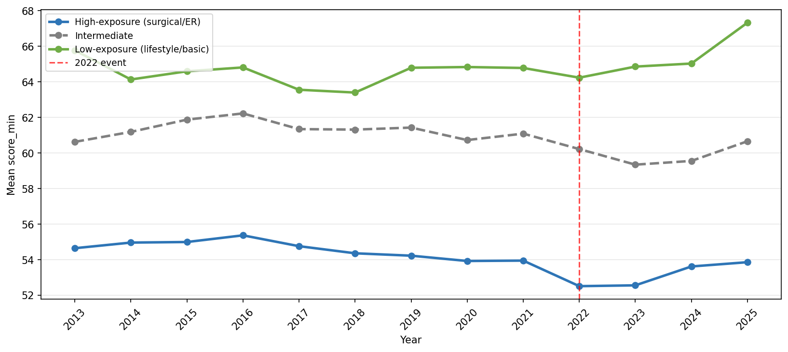

Tests whether media intensity around healthcare violence in Türkiye correlates with revealed shifts in medical specialty preferences, measured through branch-level minimum scores on the Turkish Medical Specialization Examination (TUS) from 2013 to 2025. Branches are classified by exposure to patient contact (high / intermediate / low) following the Dorsey et al. (2003) controllable lifestyle framework.
The central finding is group-specific: media intensity is negatively associated with minimum scores in high- and intermediate-exposure branches, while low-exposure branches show no such pattern — consistent with a violence-specific deterrence signal rather than a general decline in TUS competitiveness.
−0.965
D1 × high-exposure interaction (p = 0.002); Spearman r = −0.908 (p < 0.001)
−0.849
D1 × intermediate-exposure interaction (p = 0.005); Spearman r = −0.724 (p = 0.005)
+0.303
Low-exposure Spearman r (p = 0.315) — positive and non-significant, matching the falsification expectation
13 / 13
Leave-one-out iterations in which interaction terms stay significant at the 1% level
Interaction terms are identical across quadratic and year-dummy trend controls. Results are reported as correlational; no causal claim is made.

Mean minimum TUS scores by exposure group (2013–2025). High- and intermediate-exposure branches decline after 2022 while low-exposure branches rise.
An end-to-end text-as-data pipeline with explicit annotation quality reporting, applied to a substantively meaningful labor-economics question. Combines NLP (annotation, LLM extension, validation), econometric design (interaction terms, panel fixed effects, sensitivity analysis), and a careful framing that does not overstate what the data can identify.